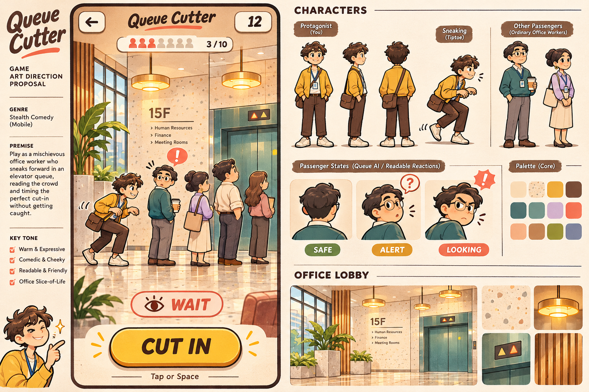
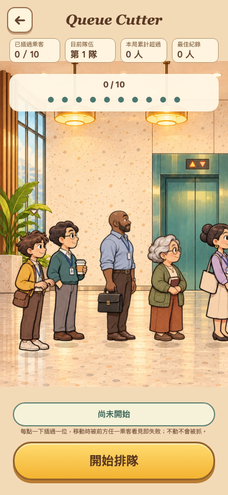
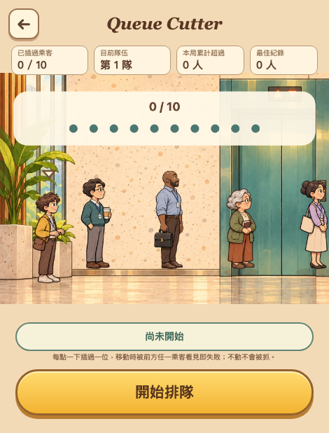

<!doctype html><html lang="en"><meta charset="utf-8"><meta name="robots" content="noindex,nofollow"><title>Queue Cutter visual comparison v2</title><style>body{margin:0;padding:20px;background:#ead6b8;color:#61402a;font-family:system-ui;display:flex;gap:24px}figure{margin:0}figcaption{height:42px;font-size:15px;font-weight:bold}.reference{position:relative;overflow:hidden;width:272px;height:500px}.reference img{position:absolute;max-width:none;width:759px;height:506px;left:-90px;top:0}img.actual{height:500px;width:auto;display:block}</style><figure><figcaption>Approved direction</figcaption><div class="reference"></div></figure><figure><figcaption>Actual game: 390 x 844</figcaption></figure><figure><figcaption>Actual game: 470 x 618</figcaption></figure></html>
